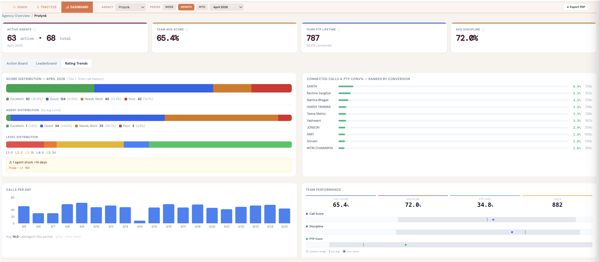
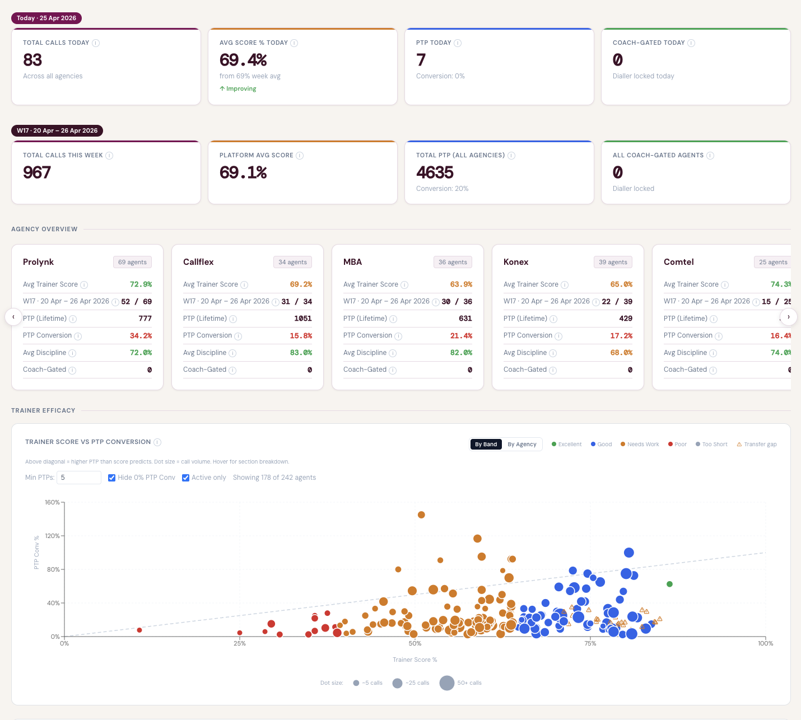
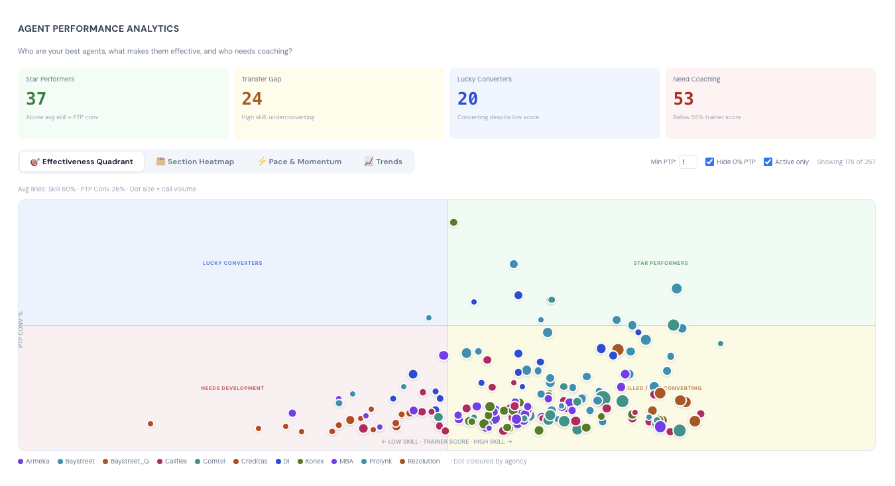
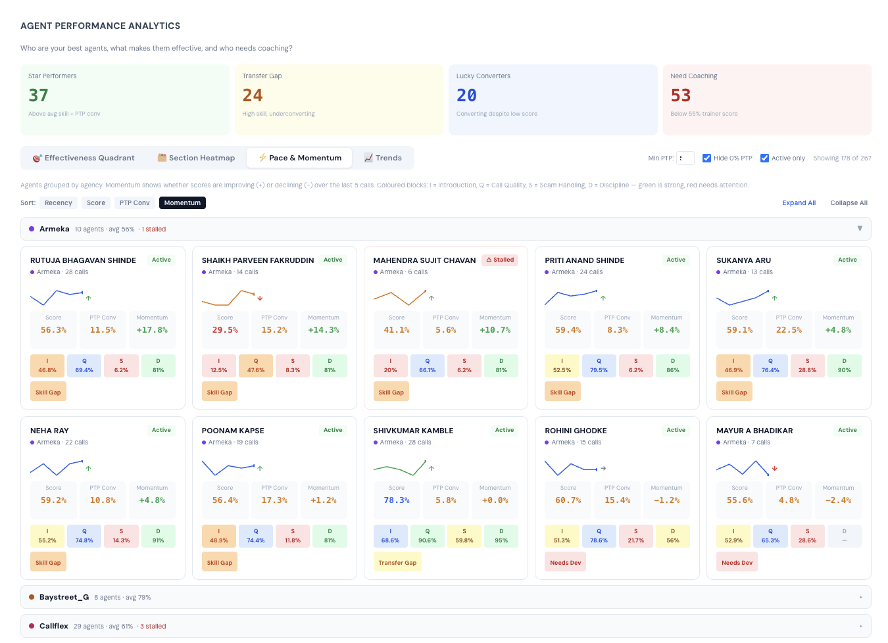
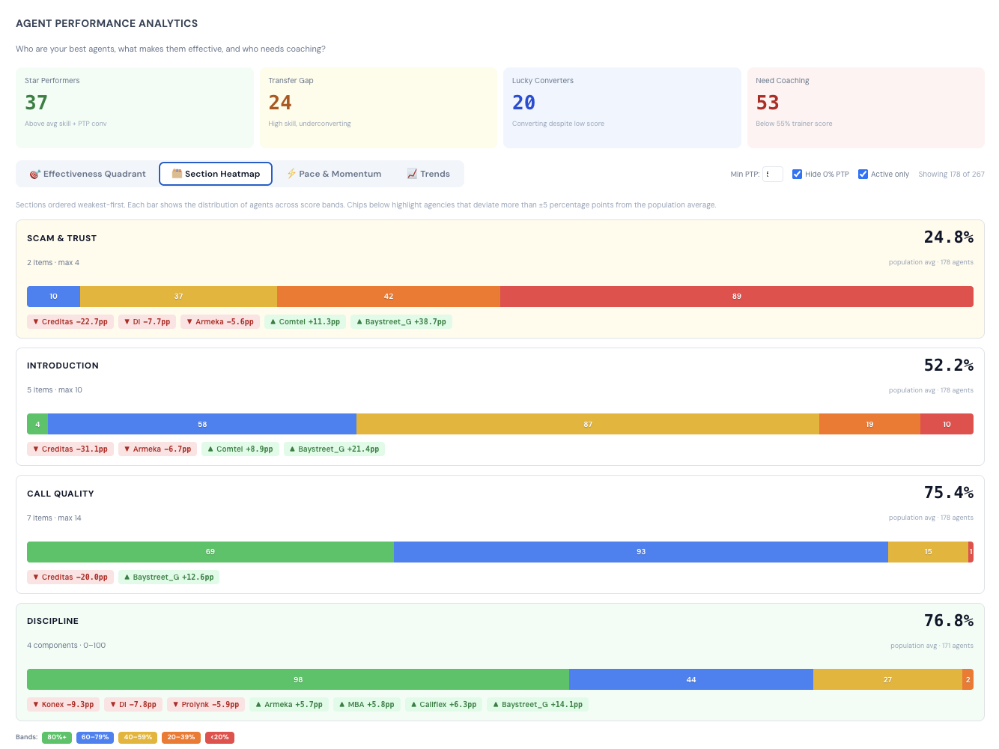
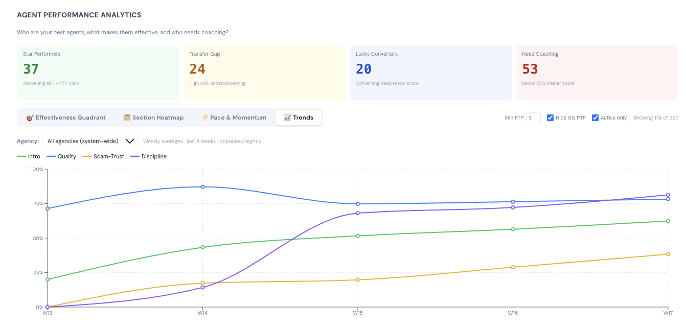
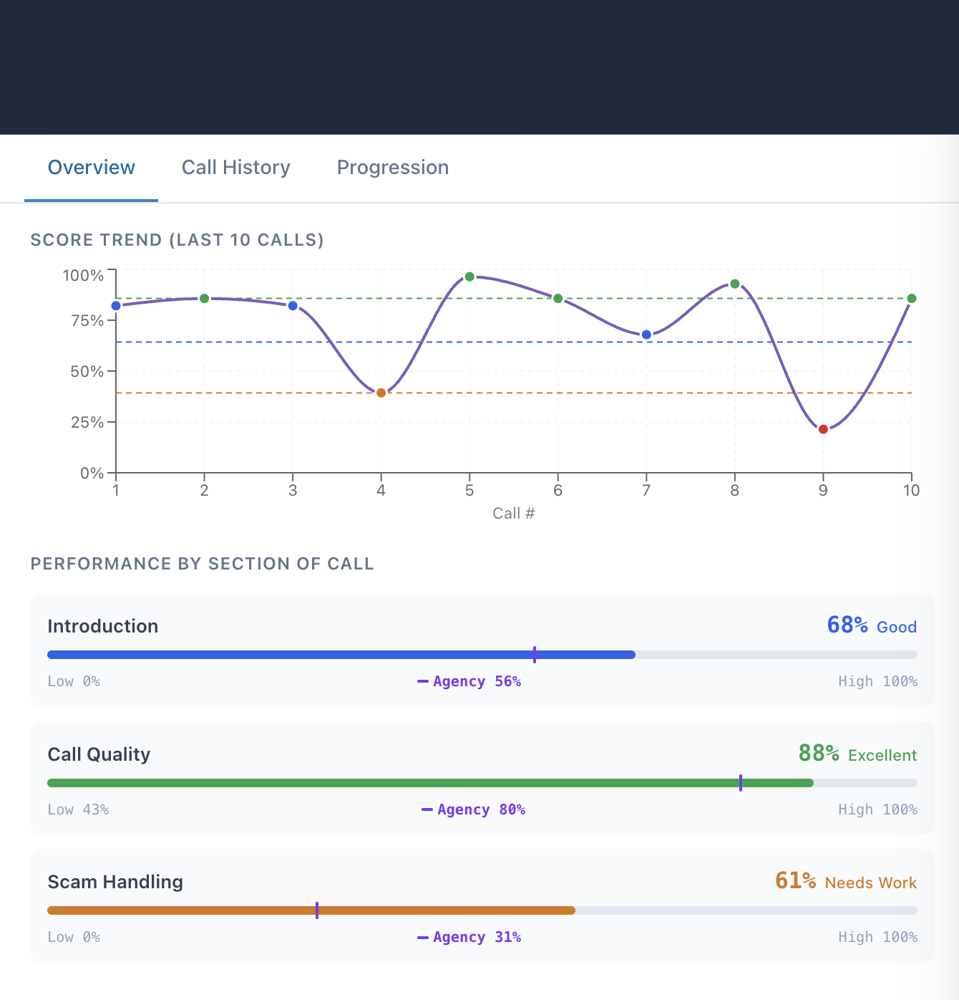
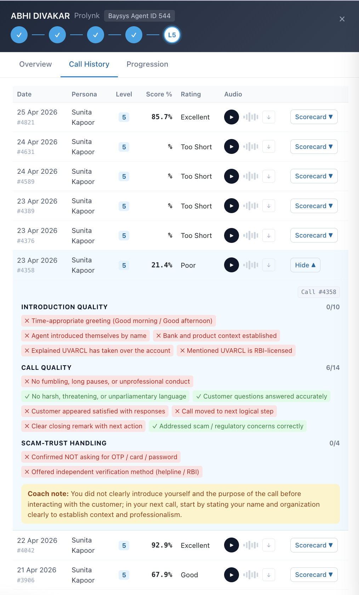
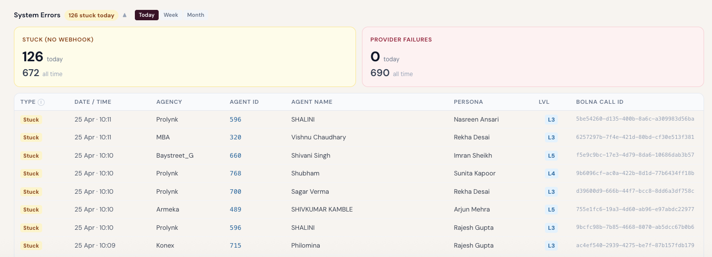

The 96 hours ended on Tuesday, March 26. By Thursday, March 27, the system was embedded in the CRM and agents were making real practice calls against AI personas on real phones. The part that took 96 hours was the scaffold: models, webhook handler, Bolna integration, briefing card, call initiation, scorecard. The part that has taken every day since is everything else. Bugs in live calls. Prompt regressions that only appear when a Hyderabad-based textile wholesaler responds in Urdu instead of Hinglish. A ghost call backfill that covered 209 rows no one knew existed. A discipline scoring architecture that had to be rebuilt because the data team changed their weighting formula and the trainer had no way to stay in sync. All of this is the real system. The sprint was the idea. The 30 days after were the proof.
This is a detailed account of what was built from that Thursday through the end of April 2026. It covers the bugs as well as the features, the prompt engineering iterations that failed before the ones that held, the architecture of the analytics dashboard that runs today, and the infrastructure decisions that turned a fast prototype into something dependable enough to gate access to real customer calls on the strength of training performance.
March 27: The First Webhook Fires Into Production
CRM integration was live on March 27, three days after the sprint began. But "live" in those first days meant that the plumbing worked—calls could be initiated, the AI answered, and scores came back. The production webhook connecting Bolna's AI cloud to the CRM backend didn't flow reliably until April 4, when the two-layer authentication was locked in: IP whitelist on Bolna's outbound IP (13.203.39.153) plus a URL token in the webhook endpoint path. Both checks run in sequence. A webhook that fails the IP check never reaches parsing. The token comparison is constant-time to prevent timing attacks. In development, both checks are skipped when the environment variables are empty—a conscious decision so engineers can test locally without configuring secrets. In production, neither check is optional.
The webhook payload is stored verbatim before any extraction logic runs. Every completed Bolna call has a raw_webhook_payload JSON field and a transcript_text field on the TrainingCall model. This turned out to be critical: within the first two weeks, the Bolna extraction format changed between API versions. Score fields that had arrived as plain integers arrived as nested objects—{"objective": "2"} instead of 2. The webhook handler had to be extended with a _parse_score_value() method that handles both formats. Without the raw payload stored, diagnosing this would have required re-running historical calls. With it, the fix was a grep and a test.
What the webhook receives: After every completed practice call, Bolna fires a POST to https://crmapi.bayst.finance/trainer/webhook/bolna/?token=<secret> with a JSON body containing the 14 binary score fields, conversation duration, LLM token count, the full transcript, and a coaching note generated by a dedicated Bolna extraction agent. The backend processes this in under 100ms: validates auth, checks idempotency on bolna_call_id, extracts and casts all 14 score fields, computes section totals, updates difficulty progression, stores everything. One atomic transaction.
Eleven Prompt Versions: Every Bug a Live Call Taught Us
The system went live on v8.5. It is now on v11.x. Eleven major iterations in thirty days, each one responding to a real failure in a real call. The failures were not subtle. In one of the first live calls, Karthikeyan Subramanian said "UVARCL? I have not heard of this organization" after the agent mentioned only "personal loan." UVARCL—the name of the debt buyer, which the AI persona must never volunteer—had leaked. The agent hadn't said it. The AI had volunteered it unprompted, breaking the entire premise of the training scenario.
The root cause was timing. The system prompt contained a CRITICAL guard at the end of Section 3 instructing the persona not to volunteer UVARCL. But by the time the LLM read that guard, it had already committed to generating Section 3 output. The guard was downstream of the decision it was trying to prevent. The fix in v8.7 moved the FORBIDDEN block to the end of Section 2 with an explicit wrong/right example—not just a rule, but a contrast. The LLM was shown what it must not say next to what it should say instead. That specific construction proved more robust than declarative prohibitions alone. The same call type has not produced a UVARCL leak since v8.7.
The most significant structural change was v11.0. Until Session 33 (April 12), all 9 personas had one prompt file each with a {difficulty_level} placeholder that injected the current level at call time. This created a single-prompt-serves-all architecture that became increasingly unworkable as difficulty levels diverged. A prompt written to make Rajesh Gupta cooperative at L1 contained constraints that made him implausibly compliant at L5. The per-level architecture replaced this with 45 separate prompt files—one per persona-level combination—named {slug}-{bank}-{gender}-L{n}-v{X.Y}.md. The database holds 45 rows in training_personas. The prompt_version field encodes both level and version: L3-v11.1 means difficulty level 3, version 11, iteration 1. Adding a sixth difficulty level requires no code changes—only 9 new prompt files and a re-seed.
The sync pipeline handles the full round-trip. A single management command—python manage.py sync_persona_prompts or a POST to the sync endpoint with a Bearer token—reads all 45 prompt files, strips the YAML briefing card block from each (so financial data doesn't reach Bolna), replaces the Difficulty Level: L{n} hardcoded line with a {difficulty_level} placeholder for backward compatibility, and writes the content to the database. The database is source of truth for live calls. Editing a prompt file has zero effect on production until sync runs. This is intentional: it creates an explicit promotion gate between draft and live.
Session 18: Before Agents Can Practice, They Must Train
On March 30, a new gate was inserted into the trainer flow. New agents arriving at the Practice tab for the first time were no longer presented with a briefing card. Instead they saw a banner: "Complete one Coach scenario first." The Voice Coach shipped as a prerequisite.
The Coach is a structured audio-guided training module: five scenarios covering the most common call types (nervous debtor, aggressive debtor, dignified refusal, distressed and overwhelmed, analytically-minded challenger), two languages (Hindi and English), six phases per scenario (introduction, first resistance, escalation, verification request, resolution attempt, close). Each phase has three audio blocks: the script (what to say), the why (the reasoning behind it), and the watch (what to watch for). Some phases have a fourth tip block. Every block has a play button inline, and the timeline advances automatically as audio completes. One hundred and twenty MP3 recordings cover all blocks across both languages.
The gate check is in the backend BriefingView. When an agent loads the briefing, the view calls get_or_create on their DifficultyProgression row. If they have zero total calls and no coach_completed_at timestamp, a 403 with error key coach_required is returned. The frontend shows the gate banner. When the agent completes any scenario, the frontend POSTs to /trainer/coach/complete/, which sets the timestamp and unlocks Practice permanently. Existing agents with any call history are grandfathered—they never see the gate.
Three edge cases had to be handled in the first two weeks of live operation. The POST to /coach/complete/ was failing silently for some users, leaving them permanently blocked. The fix added three retries with 2-second gaps and a localStorage fallback—if the POST fails, the completion is stored locally and re-attempted when the agent loads Practice next time. Second: several agents who had completed coaching before the backend gate was added had zero calls but also no completion timestamp. A SQL backfill in the Supabase SQL Editor set coach_completed_at for all users with total_calls > 0. Third: the failsafe exception handler in BriefingView was catching bare Exception—too broad. It was narrowed to (DifficultyProgression.DoesNotExist, OperationalError) so infrastructure failures pass through cleanly while preventing the coach gate from blocking agents due to a database timeout.
From Leaderboard to Analytics Platform: Three Weeks of Dashboard Builds
The original dashboard was simple: a leaderboard of agents sorted by average score, a rating distribution chart, and an agency filter. By April 17, the admin view had become a multi-layer analytics platform covering agency-level KPIs, agent-level efficacy scatter, section heatmaps, pace and momentum tracking, eight-week trend lines, a system errors panel, and a weekly snapshot pipeline powering all historical views. Every component was built in response to a specific operational question that could not be answered by the original dashboard.

Figure 1 — Rating Trends (Team Lead view). 63 active agents, 68 total. Score distribution shows 29.4% Excellent calls and 42.9% Good — but the agent distribution by average score tells a different story: most agents are in "Needs Work" territory. Level distribution shows 31 of 68 agents at L5, the highest difficulty. One agent (Pooja) has been stuck at L1 for 18 days — the dashboard flags this automatically.
The level distribution is one of the most operationally useful data points the dashboard produces. When 31 of 68 agents in an agency are at L5—the adversarial difficulty level where personas call the call a textbook scam, threaten cybercrime complaints, and demand written proof before engaging—it means the training system has done its job on raw knowledge transfer. Those agents are ready for harder real calls. What the level distribution cannot tell you is whether their PTP conversion rate improves as their trainer score improves. That question required a new chart.

Figure 2 — Admin Overview. Today: 83 practice calls, 69.4% platform avg score. This week (W17): 967 calls across all agencies. Agency cards show Prolynk leading on trainer score (72.9%) while Comtel scores 74.3%. The Trainer Efficacy scatter plots each of 242 agents by trainer score vs. PTP conversion rate, with dot size representing call volume. The diagonal dashed line is the expected relationship. Dots above the line are converting better than their score predicts. Dots below are underconverting.
The Trainer Efficacy scatter (built in sessions S42r through S42y) took four iterations to get right. The first version had a y-axis bug that clipped dots above 100% PTP conversion—some agents convert more than one promise per call by catching sequential follow-ups. Changing the domain from [0, 100] to [0, 'auto'] let those points appear. The dot size was initially by trainer call count; changed to PTP lifetime because call count skewed toward new agents making many practice calls, not agents driving real business value. The colourBy toggle (by band vs. by agency) was added to let admins switch between viewing skill distribution and agency clustering. Default filters—minimum 5 PTPs, hide 0% conversion, active agents only—prevent the scatter from being dominated by inactive agents with one lucky call.
Four Tabs, One Question: Who Needs What Kind of Help?
The Agent Performance Analytics component—built in sessions S42t through S42u—is the most analytically complex part of the dashboard. It starts with four summary cards: Star Performers (37 agents above average skill and PTP conversion), Transfer Gap (24 agents with high skill but underconverting), Lucky Converters (20 converting despite below-average scores), and Need Coaching (53 agents below 55% trainer score). These segments come from the efficacy scatter quadrant, divided at a skill threshold of 60% and PTP conversion threshold of 26%.

Figure 3 — Effectiveness Quadrant. Showing 178 of 267 agents (min 5 PTPs, active only). The upper-right quadrant — Star Performers — is the goal state. The Transfer Gap segment (high skill, underconverting) is analytically interesting: these agents have learned the training rubric but something in their real-call behaviour is suppressing conversion. The Lucky Converters segment (lower-right) are converting despite low scores — possibly on relationship or territory, not training. 53 agents are below 55% trainer score and in active need of coaching intervention.
The second tab — Section Heatmap — is the hardest one to look at. It ranks call sections by weakness, ordered weakest-first, and shows each section's average score as a percentage alongside a distribution bar showing how agents are spread across bands. It also shows which agencies deviate most from the population average.

Figure 4 — Section Heatmap. Ordered weakest-first. Scam & Trust at 24.8% is the system-wide problem — most agents fall in the Needs Work or Poor band for this section. The distribution bar shows a sea of orange and red. Creditas is 22.7 percentage points below the population on Scam & Trust. BaystreetG is 38.7pp above — the agency has systematically trained its agents on the verification offer, where most agencies have not. Introduction at 52.2% shows more variation: agencies like Comtel and BaystreetG are above population average; Creditas is 31.1pp below. Call Quality at 75.4% is healthier — most agents have learned the conduct rubric even if they haven't mastered trust-building.
The Scam & Trust number deserves a full explanation because it reveals a structural problem, not just a training gap. The section has two criteria: confirming explicitly that you are not asking for OTP, password, or card data, and offering an independent verification route (the helpline, website, RBI registry, credit bureau). The first criterion agents have learned—nearly all pass it. The second criterion they systematically fail. The reason is not that they don't know about the verification offer. It's that offering it feels, in the moment, like it might give the customer a reason to hang up before committing to a promise to pay. The agent who says "you can verify us via the RBI registry" is implicitly validating the customer's suspicion that verification might be necessary. Agents unconsciously skip it to avoid derailing a conversation that's going well. The training data confirms this is the last skill to develop—agents reach 75% on Call Quality, 52% on Introduction, and 24% on Scam-Trust not because they fail the criterion randomly but because passing it actively conflicts with a short-term incentive.

Figure 5 — Pace & Momentum (Armeka agency, momentum-sorted). Each card shows an agent's current score, PTP conversion, and momentum (improvement over last 5 calls). I/Q/S/D cells show section-level percentages. Rutuja Bhagavan Shinde leads Armeka's momentum at +17.8% despite 11.5% PTP conversion — improving fast but not yet converting. Shivkumar Kamble is tagged "Transfer Gap": 78.3% trainer score, only 5.8% PTP conversion. High skill, underconverting — a different intervention than coaching required.
The Pace & Momentum tab (S42u) required the most UX engineering. The initial version rendered all agents in a flat list — unusable at 242 agents. The revision grouped by agency in collapsible sections (first agency expanded by default), with Sort buttons outside the component to prevent re-mounting on re-render. Momentum is computed as the slope of the last 5 call scores—a negative momentum agent scoring 70% consistently is different from a negative momentum agent sliding from 90% to 60%. The signal badges (Skill Gap, Transfer Gap, Needs Dev) are assigned from the efficacy quadrant and displayed on each card so team leads can immediately see which type of intervention each agent needs without switching views.

Figure 6 — Section Trends (W13–W17, system-wide). W13 is the system's launch week — March 23-29, 2026. Call Quality started at 72% and has stayed relatively stable at 75–80%. Discipline started at 0% (tracking wasn't in place at launch) and rose sharply in W15 when the discipline pipeline connected, reaching 76% by W17. Introduction started at 20% and has grown steadily to 62%. Scam-Trust started at 0% (same pipeline gap) and has reached 40% — still the weakest section, but on a consistent upward slope.
The Trends chart is powered by the SectionScoreSnapshot model—nightly per-agency and system-wide snapshots of average intro, quality, scam-trust, and discipline scores. Migration 0017 added this model on April 15. The snapshot_rating_distributions management command was extended to populate it: for each agency, it queries that day's completed calls, computes section percentages, and upserts a row. The system-wide row uses agency_id=0 as a sentinel. A --backfill-from flag lets the command regenerate historical snapshots from existing call data—the full history visible in the chart was populated retroactively from the training_calls table. The chart also supports a dotted overlay: when an agency is selected, a second query fetches system-wide averages and renders them as dashed lines so team leads can see their agency trend against the platform baseline.
What the Drawer Shows: Abhi Divakar, Prolynk, Agent ID 544
Every agent in the dashboard is clickable. The agent drawer slides in from the right with three tabs: Overview (score trend and section performance), Call History (recent calls with expandable scorecards and audio), and Progression (level track with call counts at each level). The data in Abhi Divakar's drawer, from Prolynk, illustrates both what the system produces and what it reveals.

Figure 7 — Agent Overview: Abhi Divakar, Prolynk. All four level checkmarks filled — Abhi has completed L1 through L4 and is now in L5 (adversarial personas, maximum difficulty). Score trend over last 10 calls shows wide volatility: two calls near 100%, one call in Needs Work territory (orange dot, call 5), one call ending as Poor (red dot, call 10). Section performance: Introduction 68% Good (above agency avg 56%), Call Quality 88% Excellent (above agency avg 80%), Scam Handling 60% Needs Work (above agency avg 30%). Even a high-performing L5 agent has not solved Scam-Trust.
The score volatility at L5 is expected and by design. At L5, personas call the agent a fraudster directly, threaten to file a cybercrime complaint, and refuse any engagement without written documentation. A good call (92.9% Excellent) and a bad call (21.4% Poor) from the same agent against the same persona on consecutive days reflects not inconsistency but the nature of the difficulty. Some calls the customer is more willing to engage. The training value is not eliminating variance—it is developing the range of responses capable of handling the worst version of the scenario.

Figure 8 — Call History: four consecutive "Too Short" calls, then an Excellent. Calls #4631, #4589, #4389, #4376 (April 23–24) are all "Too Short" — below the 20-second minimum conversation duration gate added in S43a. These calls are not scored; the persona connection dropped before a real conversation began. Call #4042 (April 22) scored 92.9% Excellent with an expanded scorecard: Introduction 9/10, Call Quality 14/14, Scam-Trust 3/4. The single Introduction miss was not introducing by name before asking questions. The Scam-Trust miss was not offering an independent verification route. The coach note explains why the call worked and what to fix.
The expanded scorecard for Call #4042 shows the exact anatomy of an Excellent call that isn't perfect. Introduction 9/10: four of five criteria met. The agent greeted appropriately, established bank context, explained the debt assignment chain, and named UVARCL as RBI-licensed. But they did not introduce themselves by name before the first question—a common pattern where agents get to the substantive content correctly but skip the personal identification step. Call Quality 14/14: perfect. Every criterion met. The conversation moved forward, questions were answered, the close was clear. Scam-Trust 3/4: the agent confirmed they were not asking for OTP or sensitive data, but did not offer the verification route.
The coach note is generated by a dedicated Bolna extraction agent that analyzes the transcript independently of scoring. It is not a template. It reads the actual conversation and provides turn-specific feedback. In this case, it correctly identified that while Abhi established legitimacy, the sequencing was wrong—the push for confirmation came before sufficient organizational context was established, triggering the customer's suspicion. An agent reading this note has a specific, actionable instruction for the next call, not generic advice.
Ghost Calls, Too-Short Gates, and 126 Stuck Today
A "ghost call" is a completed Bolna webhook that reports zero conversation duration and zero LLM tokens. From the system's perspective, the call completed—a webhook arrived, the idempotency check passed, the call was marked as completed. From any other perspective, nothing happened. The agent's phone never rang, or rang once and disconnected before the AI answered. Scoring a ghost call would produce scores of zero for every criterion and damage the agent's statistics and difficulty progression with data that has nothing to do with their performance.
Session S43a added a ghost call gate before any scoring logic runs. If a webhook arrives with conversation_duration = 0 and llm_tokens = 0, the call is marked status='failed', call_outcome='provider_failure' and processing stops. The gate split required a careful look at the webhook handler's structure: the status-only check (idempotency) had to run before the ghost check, but scoring had to run only after both. The backfill run on April 14 updated 209 historical rows that had been scored as zero across multiple days—far more than the original estimate of 40.
A "too-short" call is different. These calls connect—the agent speaks, the AI responds—but the conversation ends in under 20 seconds. This covers disconnects, network failures, agents who immediately hang up, and calls where the agent's opening was so poor that the AI ended the scenario. Scoring a 12-second call with the same rubric as a 4-minute call produces meaningless data. Session S43a (Fix A2) added a sub-20-second gate: calls with a non-zero but sub-20-second conversation duration receive call_outcome='too_short', rating_band='Invalid', and all 14 score fields remain NULL. The transcript and recording URL are still saved for debugging. The 20-second threshold is configurable via TRAINER_MIN_CALL_DURATION.

Figure 9 — System Errors panel. 126 calls stuck today (Bolna accepted the call but never fired a webhook), 672 all time. 0 provider failures today, 690 all time. The table shows the live list: agents from Prolynk, MBA, Baystreet_G, Armeka, and Konex, calling Nasreen Ansari, Rekha Desai, Imran Sheikh, Sunita Kapoor, and Arjun Mehra at L3 through L5. Stuck calls cluster in time — 8 calls between 10:09 and 10:11 AM — suggesting a brief Bolna infrastructure event rather than individual connection failures. These will be resolved at 1AM by the nightly cleanup job.
The System Errors panel replaced the earlier "Unscored Calls" panel in session S43d and was subsequently refined in five more sessions (S43f, S43h, S43n, S43q, S43s). Each refinement responded to a specific operational problem. S43f added agent name and agency name to the table rows so operators didn't have to cross-reference agent IDs manually. S43h fixed time display to IST and made the Agency column sortable. S43n fixed a NULL initiated_at bug where ghost-call backfill rows (which had no initiated_at from Bolna) were excluded from period counts. S43s fixed the most operationally frustrating bug: in month mode (the default dashboard view after S43m changed the default), the system_errors count always showed "—" because the data was built inside an if mode != "month" guard. Moving the dict construction outside the period guard fixed it—the panel now shows correct counts regardless of which time period the dashboard is viewing.
Stuck calls are cleaned up nightly. The resolve_stuck_calls management command (Session S43c) runs at 1AM via Celery beat. It queries all status='initiated' TrainingCalls with a non-null bolna_call_id and checks each against the Bolna API. A 404 response means Bolna has no record of the call—marked as failed/provider_failure. An ended status means the call completed on Bolna's side but the webhook never arrived—marked as failed/no_answer. Running calls are skipped. The command supports --dry-run and --limit N for manual runs during urgent clearance. Before this command existed, stuck calls accumulated indefinitely. The 672 all-time count includes the backlog that pre-dated the command; new stuck calls now clear within 24 hours.
The Investigation That Revealed 49% of PTPs Were Invisible
Session S43b was not a feature session. It was an investigation. The dashboard had been showing PTP conversion numbers that felt low. A data analysis session on April 14 confirmed the root cause: fetch_ptp_data() was using an INNER JOIN between crm_comments (where PTPs are logged) and call_logs (dialler data). call_logs only contains data since February 19, 2026—the day the Exotel dialler integration went live. Any PTP recorded before that date, or for any call not routed through the dialler, would produce no match in the join and be silently excluded.
The analysis found that 49% of all-time PTPs—4,611 of 9,392—were invisible to the trainer dashboard. The stable-period analysis (March 15 to April 13) showed 30.2% hidden. Rezolution agency was worst: 81% of their PTPs invisible. Prolynk: 52% hidden.
The fix design was agreed: switch PTP attribution to crm_comments.comment_by (a direct agent FK that doesn't depend on dialler data). But the fix was gated behind the data team's pending Exotel webhook integration and a mandatory CRM form update—structural dependencies that couldn't be resolved in a sprint. The investigation was closed as documented, not fixed. The dashboard PTP numbers remain understated until those dependencies are resolved. The documentation at Documentation/attributed_ptps_investigation_2026-04-14.md has the full analysis.
In parallel, the PTP counting logic itself was rewritten in S42w. The original logic double-counted PTPs: if two agents called the same customer on the same day, each was credited with the full PTP. The rewrite uses a DISTINCT ON (customer_id, ptp_date) CTE so each PTP date for each customer counts once at the system level. Conversion credit is split 50-50: half to the agent who first secured any PTP for the customer, half to the agent attributed to the most recent PTP before payment. Same agent both times equals full credit. The 50-50 split is visible in the data—converted_ptps is a float that can be 0.5.
April 23–24: A General-Purpose Data Pipeline Engine in Six Sessions
The last major build in April was not a trainer feature. It was infrastructure. Six sessions over two days (April 23–24) produced the Analytics ETL Harness: a general-purpose scheduled SQL-to-analytics-table engine that handles TRUNCATE + batch INSERT, data quality checks, run logging, failure alerts, and optional CSV export to Google Drive. The first job—baysys_daily_analytics_snapshot—runs a 38-column daily analytics snapshot from the raw UVARCL data into an analytics schema table.
The batch INSERT uses psycopg2.extras.execute_values for a single multi-row INSERT per batch—approximately 10× the throughput of executemany. But the code runs on Django 5.x in some environments, which uses psycopg3 cursor wrappers that don't expose the psycopg2-specific extras. The solution is runtime detection: the _get_raw_cursor() helper unwraps Django's cursor chain, then checks whether the raw connection has an encoding attribute (a psycopg2 marker). If yes, use execute_values. If no, fall back to executemany. This means the same code runs correctly on both psycopg2 and psycopg3 without configuration changes.
The check system is YAML-configured. Each job has a checks.yaml that specifies blocking checks (which roll back the transaction if they fail) and non-blocking checks (which log but don't abort). The current daily snapshot job has five checks: not_empty (custom SQL asserting at least one row), source_loan_coverage (coverage ratio against source query must be ≥ 90%), null_check_critical (null rate tolerance per column), agency_distribution (minimum groups), and row_count_drift (row count must not change more than 15% day-over-day). The drift check passes on first run. Blocking checks trigger rollback and send an alert email. Non-blocking failures are recorded in checks_json on the run log row but don't stop the pipeline.
Per-job notification emails were added in ETL-S05: the job.yaml can specify a notify_emails list that overrides the global NOTIFY_EMAILS setting. When the daily snapshot job runs, email goes to the specific data team members responsible for that job, not every engineer on the global list. The optional CSV export (ETL-S06) queries the target table post-commit, serializes to CSV, and uploads to a specified Google Drive folder via a service account. The export failure is swallowed—if Drive is unreachable, the job still succeeds. The CSV export is disabled by default in the daily snapshot job's YAML; enabled by setting csv_export.enabled: true and supplying a Drive folder ID.
The harness has 79 tests covering loaders, checks, harness logic, notifications, and exporters. Zero ruff findings. The entire implementation—scaffold, documentation, implementation, performance improvements, per-job emails, CSV export—was built across six sessions in two days. The institutional decision to use AI-assisted builds with mandatory human code review after each session explains the speed without sacrificing quality. Every session produced a code review pass. Every finding was addressed before moving to the next session.
420+ Tests, 18 Migrations: The Build Narrative as Schema
The test suite has grown from 8 smoke tests (Prompt A, March 24) to 420+ passing tests as of April 2026, plus 79 ETL tests, all passing. Every module with logic has a corresponding test file. Tests are run against in-memory SQLite to keep the suite fast, but the production database is Supabase PostgreSQL and the connection mode matters: session-mode pooler on port 5432 rather than transaction-mode on port 6543, because search_path is not preserved across transaction-mode connections. The test suite has never been green with an unstaged breaking change; the rule is zero errors and zero ruff findings before any commit touches the main branch.
The eighteen migrations document the system's evolution more precisely than any feature list. Each one represents a real problem that reached the schema level.
Where the System Stands: April 25, 2026
The BaySys Voice AI Trainer is live at crm.bayst.finance/trainer/hub. Three Bolna agents handle all nine personas across their five difficulty levels. Forty-five prompt files at v11.x are in the database, synced from git after each prompt engineering session. Four hundred twenty tests pass. Eighteen migrations are applied to the Supabase production database. The weekly eval pipeline runs Friday nights. Three Celery jobs run nightly: snapshot_rating_distributions at midnight, resolve_stuck_calls at 1AM, backfill_recording_urls every five minutes for recent completed calls. The ETL harness runs a daily analytics snapshot at 2AM.
What the system still doesn't do: the PTP attribution fix is blocked on the data team's Exotel webhook integration. The Bolna spike (issue #45—evaluating whether to replace Bolna with self-hosted voice orchestration using Voxtral TTS, Pipecat or LiveKit, and Whisper STT) is open and long-term. The overall report (issue #46—callers across agencies, untrained agents from the CRM users table) is backlogged. Score trend chart (#40) and structured persona feedback (#37) are frontend features waiting for dashboard capacity.
Five issues remaining in the backlog is the wrong way to read the current state. The better way is: a founding team of four engineers built and operates a voice AI training platform handling 967 calls per week across 242 agents at 10 agencies, with fully automated scoring, adaptive difficulty, a Voice Coach prerequisite, a multi-layer analytics dashboard, a weekly automated eval pipeline, and a nightly ETL harness—without a dedicated data team, without external vendors, and without a single third-party SaaS tool for anything except the telephony layer. That is the right way to read it.
"The system trained agents. The bugs trained the system. Thirty days after the sprint, both were better."
The metrics from the Section Trends chart are the cleanest summary of what the 30 days produced. Introduction quality went from 20% at launch to 62% by week 17. Call Quality held above 75% throughout—it was never the problem. Discipline tracking came online in week 15 and immediately showed 67%, rising to 76% by week 17. Scam-Trust, the section that reveals whether agents have genuinely internalised the compliance intent behind the training (not just its form), went from 0% to 40%. Still the lowest. Still improving. The system is working.